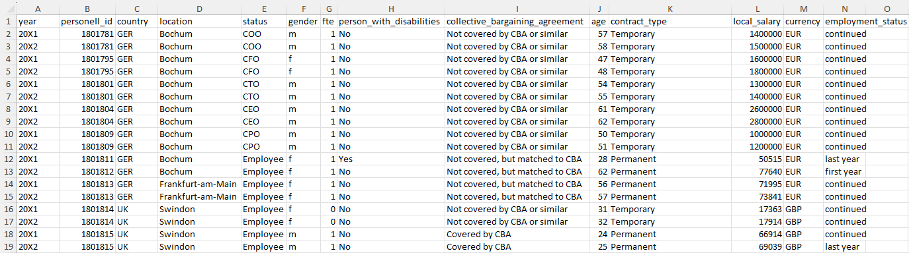
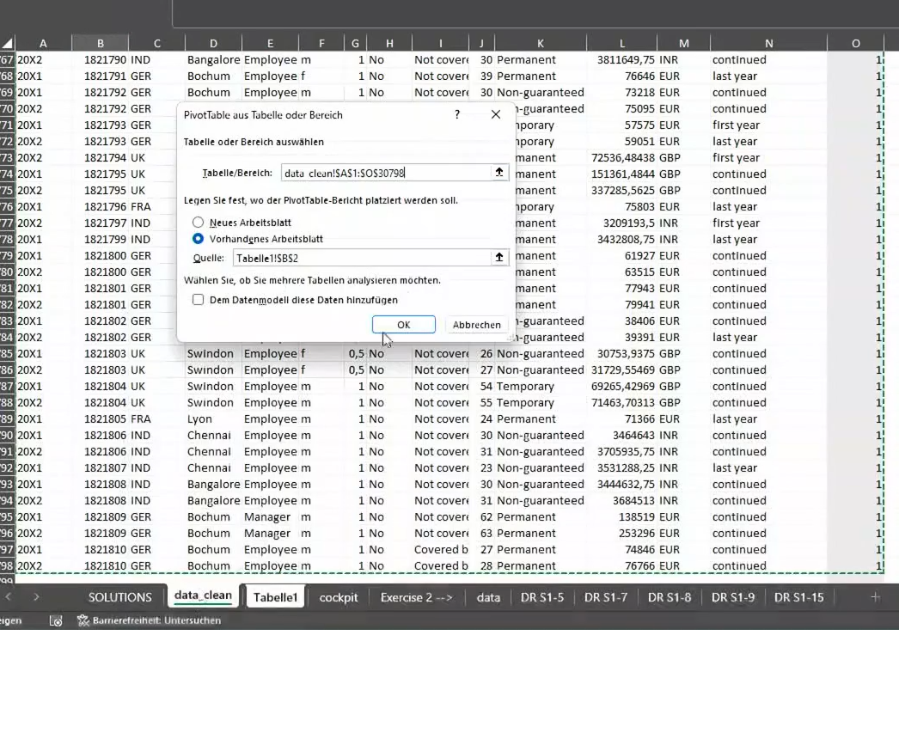
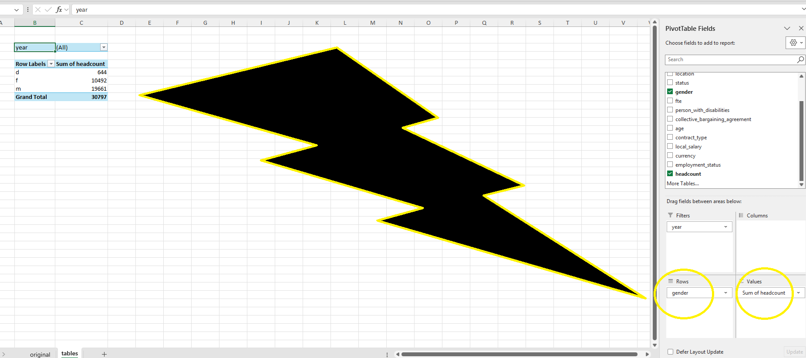
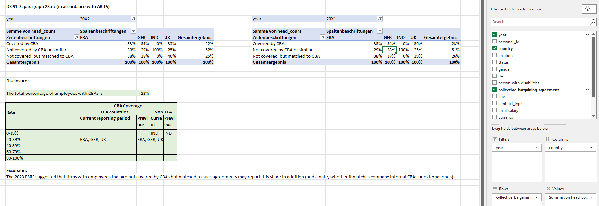
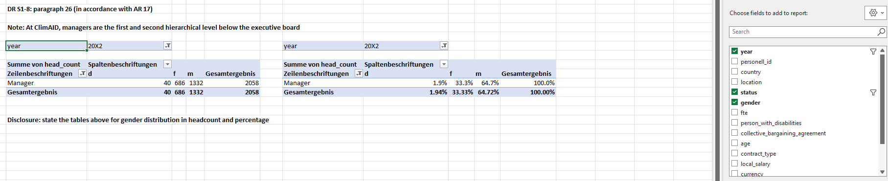
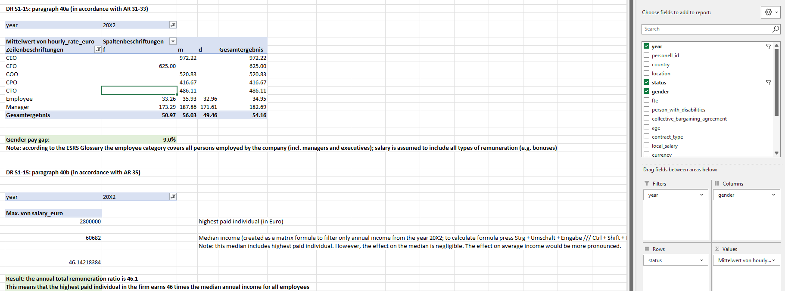

EU-Sustainability Reporting - S1

ESRS (EU Sustainability Reporting Standards) provides mandatory reporting standards under the CSRD (Corporate Sustainability Reporting Directive) in the EU. ESRS define how companies must report on sustainability-related impacts, risks, and opportunities. They include two cross-cutting standards (ESRS 1 and ESRS 2) that explain the general principles, reporting structure, and required company-wide disclosures. The environmental standards (E1–E5) cover climate change, pollution, water and marine resources, biodiversity, and resource use and circular economy. The social standards (S1–S4) focus on a company’s own workforce, workers in the value chain, affected communities, and consumers. Finally, the governance standards (G1) addresses ethical business conduct, including corruption, lobbying, and transparency.
| Pillar | Code | Topic |
|---|---|---|
| Cross-cutting | ESRS 1 | General requirements |
| Cross-cutting | ESRS 2 | General disclosures |
| Environment | E1 | Climate change |
| Environment | E2 | Pollution |
| Environment | E3 | Water and marine resources |
| Environment | E4 | Biodiversity and ecosystems |
| Environment | E5 | Resource use and circular economy |
| Social | S1 | Own workforce |
| Social | S2 | Workers in the value chain |
| Social | S3 | Affected communities |
| Social | S4 | Consumers and end-users |
| Governance | G1 | Business conduct |

Case Study - Reporting Standards regarding S1
ClimAID Services AG in Bochum is preparing the social section of the sustainability report in accordance with ESRS-S1. At this stage, the focus is on the preparation of the Metrics and Targets disclosures. The relevant disclosure requirements have been highlighted in red in the attached file. Other ESRS-S1 components such as policies, targets, training hours, health and safety, etc. will be addressed separately at a later stage. We have received HR info covering both head counts and FTE (full-time equivalent), measured on an end-of-year basis.

Before drafting the disclosures, we are considering whether workforce-related metrics should be reported using end-of-year or annual averages figures (how many employees the firm has?).
Arguments in favor of using year-end head count figures:
- Potential alignment with other financial and non-financial reporting data, which is typically presented on an end-of-year basis.
- Improved consistency across reporting sections
- When combined with average figures, end-of-year data can help illustrate the magnitude of workforce fluctuations during the reporting period.
Arguments in favor of using averages figures:
- Annual averages may better reflect intra-year workforce dynamics, such as seasonal hiring, temporary contracts, dismissals, or voluntary leave.
- Additional hiring during the year is captured more accurately in average values than in a single point-in-time measure.
- Reduced scope for disclosure management, as averages are less sensitive to timing effects around the reporting date.
[A]. S1 Disclosure Prep with Excel
Let’s prepare the relevant tables or graphs in Excel for the KPIs and breakdowns (by gender, country, contract type) specified in the Application Requirements (AR) shown in Figure 2. The excel spreadsheet contains 14 columns and 30,798 rows describing employee information for ClimAID Services AG in Bochum.

- choose: Data > Filter (by Gender) > Ctrl+Shift+Down for basic tasks.
- Right next to the last column, create a dummy column (with 1) called “headcount” and activate Pivot table
- Add a new sheet, and from it, choose: Insert > PivotTable: ctrl+a 
- A pivotTable panel appears. In the panel on the right, choose the variables to create a table. 
- by Gender ⇒
- by Country ⇒
- by Contract type ⇒
[S1-5] Characteristics of the undertaking’s employees ⇒

[S1-7] Collective bargaining coverage and social dialogue ⇒

[S1-8] Diversity metrics ⇒

[S1-9] Adequate wages ⇒

[S1-15] Remuneration metrics ⇒

[B]. Difficulties with S1
Let me name difficulties we could likely encounter when working with files like these to prepare ESRS disclosures (for social matters specifically and ESG matters in general). Let me describe briefly how could we mitigate these problems.
- General file issues for ESG reporting
- Data may not be available in one file so needs to be collected from different departments/countries. ⇒
Plan sufficient collecting time. - Multiple files, not structured or formatted in the same way ⇒
To merge files, provide with data template to fill in. - Typos, missing lines, inconsistencies in data ⇒
employ sanity check, checking by filltering, etc.
- Data may not be available in one file so needs to be collected from different departments/countries. ⇒
- Potential file issues for S1
- Confidentiality issues due to sensitivity of data on payment and personal information ⇒
anonymize data or let local data managers carry out calculations; firm-wide data would then be aggregated - Calculating AVG or fluctuations might be difficult, if file is based on end-of-year data ⇒
obtain data that covers intra-year flow of personell - Data might need to be broken down into more detail (e.g., salary broken down into fixed and variable components) ⇒
plan necessary analyses ahead to avoid receiving data in an aggregated format - File may not cover individual deals (e.g. sabatticals, maternal/paternal leave, sick days, …) ⇒
plan necessary analyses ahead to avoid receiving data in an aggregated format
- Confidentiality issues due to sensitivity of data on payment and personal information ⇒
Bibliography
[1] EFRAG: Draft ESRS S1 – Own Workforce, https://www.efrag.org/sites/default/files/media/document/2025-12/November_2025_ESRS_S1.pdf (November 2025).